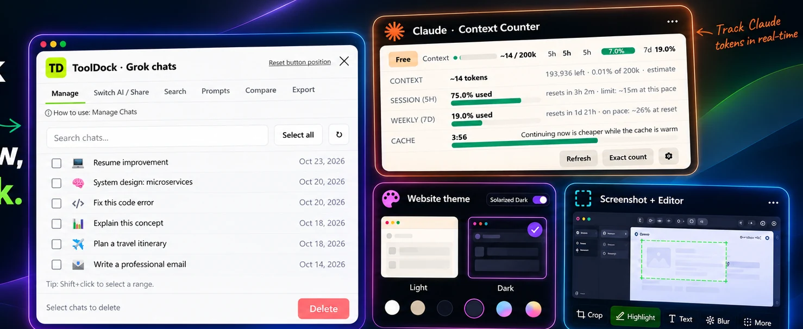

The browser extension for your AI stack
Your AI workflow.
All in one dock.
Stop losing time between tabs. Manage conversations, track Claude context, switch AIs, save prompts, capture screenshots, change website themes, and take better breaks — from one compact browser extension.
Works with
✳ ChatGPT
✳ Claude
✦ Gemini
◉ Grok
⌑ tooldock · your browser workspace
•••

✳Claude context LIVE
28.4k/ 200k tokens
✓Local-firstNo ToolDock account needed
✳ One dock. Less tab chaos.
A calmer browserSix AI workflow tools, plus the browser utilities you reach for every day.
Take a look ↘
01 Inside ToolDock
Less switching.
More getting things done.
The small tools that make a big difference — built to sit beside your work, not interrupt it.
01 AI conversations
All your chats, finally in reach.
Search chat titles across four AI sites, select conversations in batches, and switch or export a chat when you need to keep moving.
ManageSearchSwitchExport
02 Claude companion
Know where your context stands.
See estimated context usage, remaining room, cache warmth, and session and weekly pace without guessing.
Context5-hour pace7-day pace
03 Make it yours
Your browser. Your theme.
Choose from light and dark themes, or let ToolDock follow the website’s own appearance when available.
Explore theme options ↗
04 Capture + create
Capture it. Mark it up. Share it.
Capture a visible area, a selected region, or a full page. Then crop, highlight, blur, annotate, and export from the built-in editor.
Visible areaSelectionFull page
05 Repeat your best work
Good prompts, ready when you are.
Keep your reusable prompts in a personal library, add variables, and insert a prompt from the quick picker without rewriting it.
/Search saved prompts…↵
Prompt library
✦Explain it from scratchlearning · explain↗
⌘Review this codecode · review
↔Compare optionsdecision · planning
06 A healthier workflow
Small reminders. Better breaks.
Set gentle nudges to hydrate, stretch, breathe, rest your eyes, keep going, or grab a snack — and manage saved logins locally.
6 reminder typesPassword manager
02 A better browser routine
From scattered tabs
to a single flow.
ToolDock brings your everyday browser tasks into one consistent place, so you can spend less time hunting for controls and more time doing the actual work.
1Open the dock
Launch ToolDock from your browser toolbar on a supported site.
2Pick your tool
Manage chats, track context, change a theme, or capture the page.
3Stay in your flow
Keep useful prompts and browser utilities close at hand.
See the privacy approach ↗
✓One browser dockUseful tools in one place
⌘Made for everyday workFrom research to small breaks
✓ Local storage
✓ No ToolDock account
✓ No analytics
03 Private by design
Your workflow is yours.
Your data stays yours.
ToolDock is designed to keep its own preferences, saved prompts, and chat index in your browser. It doesn’t need a ToolDock account or a ToolDock-hosted backend to provide these tools.
- ✓ Local browser storage for ToolDock data
- ✓ No ToolDock analytics or advertising trackers
- ✓ No ToolDock account required
Read the full privacy policy ↗
04 Good to know
A few quick
answers.
Need a little more detail before adding an extension? Start here.
Which AI platforms does ToolDock support?
ToolDock’s AI chat tools are designed for ChatGPT, Claude, Gemini, and Grok. Individual capabilities depend on each site and the feature being used.
Does ToolDock upload my saved data?
ToolDock’s own saved prompts, preferences, and chat index are stored locally in your browser. When you interact with an AI provider, that provider’s normal privacy terms still apply.
What can I capture with the screenshot tool?
Capture the visible area, choose a region, or capture a full page; then use the editor tools to annotate, highlight, blur, crop, and export your image.
Does the Claude counter show an exact token count?
The counter provides context and usage estimates with cache and pacing information. Token and remaining-context figures should be understood as estimates unless the interface explicitly labels them as exact.
✳
✦
Ready when you are
Give your browser
a better workflow.
One dock for AI work and everyday browser tools.
Add ToolDock to Chrome ↗
TD